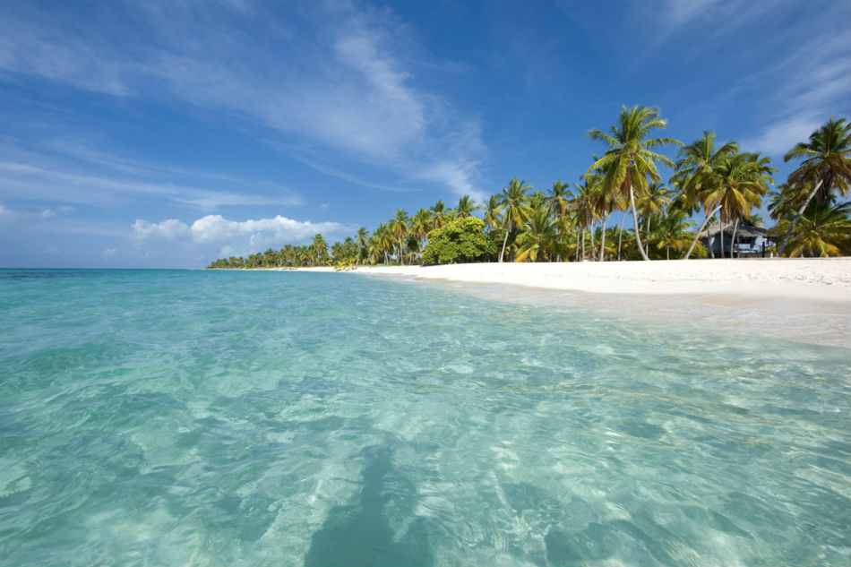

El Parque nacional del Este, tambien conociedo como Parque Nacional Cotubanamá, es una de las reservas naturales mas importates de la República Dominicana. Este parque ofrece una rica biodiversidad y paisajes impresionates.
A continuacion se muestra una imagen del Parque Nacional del Este:
En el parque, puedes realizar diversas actividades como:
Para mas informacion puedes visitar los siguientes enlaces:
Este es un video sobre el Parque Nacional del Este